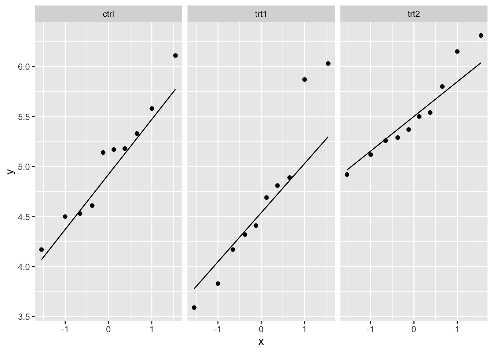
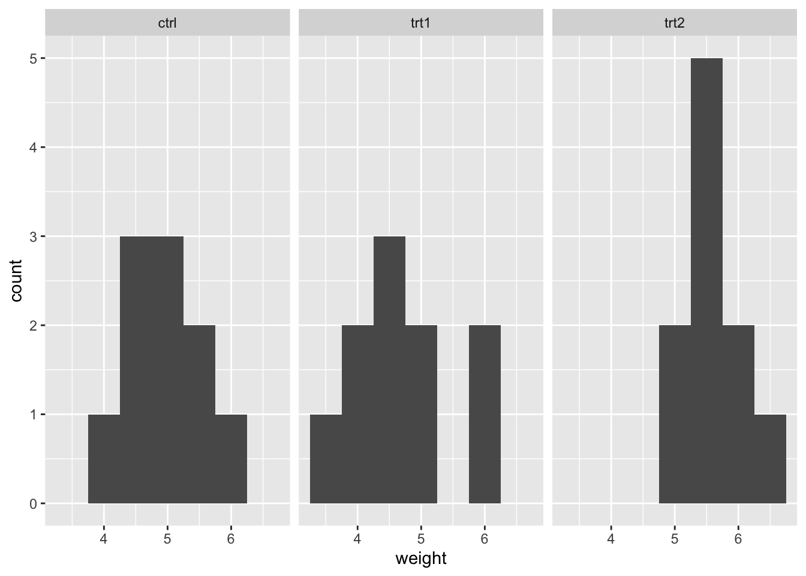
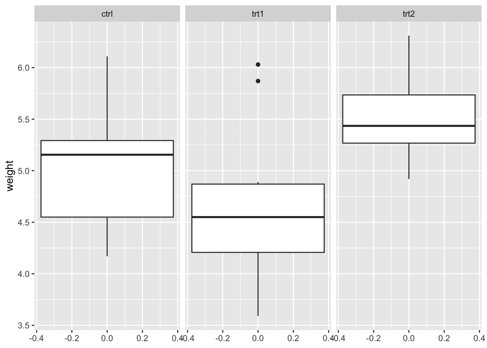

21 One-Way ANOVA
21.1 Introduction to one-way ANOVA
One-way analysis of variance (ANOVA) is an extension of a two-samples t-test for comparing means between three or more independent groups. A single factor variable is employed to categorize the data into several groups.
Null Hypothesis \((H_0)\) the means between groups are not statistically different (they ARE the same). Alternative Hypothesis \((H_a)\) the means between groups are statistically different (they ARE NOT the same).
21.2 Mathematical definition of one-way ANOVA
\[ Y_{ij} = \mu + \tau_{i} + \epsilon_{ij} \]
Where,
-
\(Y_{ij}\) represents the j-th observation (j = 1, 2, …, \(n_{i}\)) on the i-th treatment (i = 1, 2, …, k levels).
- So, \(Y_{23}\) represents the third observation for the second factor level.
- \(\mu\) is the common effect.
- \(\tau_{i}\) represents the i-th treatment effect.
- \(\epsilon_{ij}\) represents the random error present in the j-th observation on the i-th treatment.
21.3 Data Description
The PlantGrowth data set is already included in {base R} within the {datasets} package. The PlantGrowth data set includes results from an experiment to compare yield obtained under a control condition and two different treatment conditions. The measurements were obtained through the dried weight of each plant.
# Call the data set into the Global environment
data("PlantGrowth")
# Use the `glimpse()` or `head()` function to skim observations
# glimpse(PlantGrowth)
head(PlantGrowth) weight group
1 4.17 ctrl
2 5.58 ctrl
3 5.18 ctrl
4 6.11 ctrl
5 4.50 ctrl
6 4.61 ctrl# Optional: You can use the `summary()` function to confirm that all variables
# are being read correctly. E.g. the `group` variable is displayed as counts
# for each level
summary(PlantGrowth) weight group
Min. :3.590 ctrl:10
1st Qu.:4.550 trt1:10
Median :5.155 trt2:10
Mean :5.073
3rd Qu.:5.530
Max. :6.310 # Optional: You can use the `str()` function to view the factor levels and
# confirm the appropriate reference level for analysis
str(PlantGrowth)'data.frame': 30 obs. of 2 variables:
$ weight: num 4.17 5.58 5.18 6.11 4.5 4.61 5.17 4.53 5.33 5.14 ...
$ group : Factor w/ 3 levels "ctrl","trt1",..: 1 1 1 1 1 1 1 1 1 1 ...# R assigns reference level in alphabetical order. E.g. From our factor levels
# (ctrl, trt1, trt2) - ctrl will be assigned as the reference level
# automatically by R.
# Here, we see that `group` is a factor with 3 levels,
# with 1 corresponding to 1 (the first level).
# If you need to re-assign the reference level, you can `relevel()` your factor
# The first variable after `Levels:` is your new reference group.
relevel(PlantGrowth$group, ref = "ctrl") [1] ctrl ctrl ctrl ctrl ctrl ctrl ctrl ctrl ctrl ctrl trt1 trt1 trt1 trt1 trt1
[16] trt1 trt1 trt1 trt1 trt1 trt2 trt2 trt2 trt2 trt2 trt2 trt2 trt2 trt2 trt2
Levels: ctrl trt1 trt221.4 Assumptions of One-Way ANOVA
The assumptions of one-way ANOVA are as follows:
- Assumption 1: All observations are independent and randomly selected from the population as defined by the factor variable.
- Assumption 2: The data within each factor level are approximately normally distributed.
- Assumption 3: The variance of the data of interest is similar across each factor level (aka: Homogeneity of variance).
21.5 Checking the Assumptions of the One-Way ANOVA
Assumption 2: The data within each factor level are approximately normally distributed.
To check this assumption, we can examine if the data are approximately normally distributed across groups with 2 plots, the Q-Q plot or histograms, or with the Shapiro-Wilk test.
First, we will look at the Q-Q plot:
weight group
0 0 # No missing datapoints
# Normality assumption: Q-Q plot
qq_plot_plantgrowth <- ggplot(PlantGrowth) +
aes(sample = weight) +
facet_wrap(~ group) +
stat_qq() +
stat_qq_line()
qq_plot_plantgrowth
The weight variable seems to be approximately normally distributed across each of the three groups based on the Q-Q plots.
Next, we will look at histograms:
# Normality assumption: Histograms
histogram_plantgrowth <- ggplot(PlantGrowth) +
aes(x = weight) +
geom_histogram(binwidth = 0.5) +
facet_wrap(~ group)
histogram_plantgrowth
Again, the weight variable appears to be approximately normally distributed across the groups.
Lastly, we can use the Shapiro-Wilk test to test if the data is approximately normally distributed. P-values greater than 0.05 indicate that the data is likely approximately normally distributed.
# Normality: Shapiro Wilks
shapiro_plantgrowth <- PlantGrowth %>%
group_by(group) %>%
summarise(
statistic = shapiro.test(weight)$statistic,
p.value = shapiro.test(weight)$p.value
)
shapiro_plantgrowth# A tibble: 3 × 3
group statistic p.value
<fct> <dbl> <dbl>
1 ctrl 0.957 0.747
2 trt1 0.930 0.452
3 trt2 0.941 0.564The p-value for each of our groups is above 0.05, so we can assume that weight is approximately normally distributed within each group.
Assumption 3: Homogeneity of variance.
We can check this assumption with Levene’s test. A p-value greater than 0.05 indicates that the variance is similar across groups, and we therefore meet the requirements of this assumption.
# Homogeneity of Variance: Levene's test
levenes_plantgrowth <- levene_test(weight ~ group, data = PlantGrowth)
levenes_plantgrowth# A tibble: 1 × 4
df1 df2 statistic p
<int> <int> <dbl> <dbl>
1 2 27 1.12 0.341The p-value is 0.341, so we can therefore assume that our data meets the assumption of homogeneity of variance.
We can also check assumption 3 by visually examining a box plot of the outcome variable across groups:
# Variance assumption: Box plot for weight by group
box_plantgrowth <- ggplot(PlantGrowth) +
aes(y = weight) +
geom_boxplot() +
facet_wrap(~ group)
box_plantgrowth
To compare the box plot visually, we take a look at the interquartile range between each three plots. All three have approximately similar size and length, which satisfies our assumption homogeneity of variance.
21.6 Code to Run One-Way ANOVA
# Include an outcome variable, `weight`, and predictor(s), `group`. as well as
# which data set to pull variables from with `data = ` argument
anova_fit <- aov(weight ~ group, data = PlantGrowth)
# Call summary statistics from `anova_fit` object
summary(anova_fit) Df Sum Sq Mean Sq F value Pr(>F)
group 2 3.766 1.8832 4.846 0.0159 *
Residuals 27 10.492 0.3886
---
Signif. codes: 0 '***' 0.001 '**' 0.01 '*' 0.05 '.' 0.1 ' ' 1The summary includes the independent variable group being tested within the model. All variation that is not explained by group is considered residual variance.
- The
Dfcolumn tabulates the degrees of freedom for the independent variable, which is the number of levels in the variable minus 1. For example,grouphas 3 levels (3 - 1 = 2 degrees of freedom). - The
Sum Sqcolumn tabulates the sum of squares (total variation between group means and overall mean). - The
Mean Sqcolumn tabulates the mean of the sum of squares, which is calculated by dividing the sum of squares by the degrees of freedom for each parameter. - The
F valuecolumn tabulates the test statistic from the F test, which is the mean square of each independent variable (only one in this case) by the mean square of the residuals. - The
Pr(>F)column is the resulting p-value of the F statistic. Remember: the p-value shows how likely it is that the calculated F value would have occurred if the null hypothesis were true.
The p value of the fertilizer variable is low (p < 0.01), so it appears that the type of fertilizer used (group) has a real impact on the final crop yield (weight).
21.6.1 Post-Hoc Test for Pairwise Comparisons
To compare the group means directly, we can conduct a post-hoc test to see which group means are different from one another. One post-hoc test is Tukey’s Test.
# perform Tukey's Test for multiple comparisons
anova_post_hoc <- TukeyHSD(anova_fit, conf.level=.95)
anova_post_hoc Tukey multiple comparisons of means
95% family-wise confidence level
Fit: aov(formula = weight ~ group, data = PlantGrowth)
$group
diff lwr upr p adj
trt1-ctrl -0.371 -1.0622161 0.3202161 0.3908711
trt2-ctrl 0.494 -0.1972161 1.1852161 0.1979960
trt2-trt1 0.865 0.1737839 1.5562161 0.0120064In the above output, we can see that:
-
trt1-ctrl:P-value is approximately 0.391 when comparing treatment 1 (trt1) and control (ctrl), which is greater than 0.05. This indicates there is not a statistically significant difference in mean between these groups. Their means are the SAME. -
trt2-ctrl:P-value is approximately 0.198 when comparing treatment 2 (trt2) and control (ctrl), which is greater than 0.05. This indicates there is not a statistically significant difference in mean between these groups. Their means are the SAME. -
trt2-trt1:P-value is 0.012 when comparing treatment 1 (trt1) and treatment 2 (trt2), which is less than 0.05. This indicates there is a statistically significant difference in mean between these groups. Their means are NOT the SAME.
21.6.2 Regression for Comparison
To compare the ANOVA results with those of a simple linear regression, we can run a regression model to examine if there are differences between the control group and the two treatment groups.
# Simple linear regression
lm_plantgrowth <- lm(weight ~ group, data = PlantGrowth)
summary(lm_plantgrowth)
Call:
lm(formula = weight ~ group, data = PlantGrowth)
Residuals:
Min 1Q Median 3Q Max
-1.0710 -0.4180 -0.0060 0.2627 1.3690
Coefficients:
Estimate Std. Error t value Pr(>|t|)
(Intercept) 5.0320 0.1971 25.527 <2e-16 ***
grouptrt1 -0.3710 0.2788 -1.331 0.1944
grouptrt2 0.4940 0.2788 1.772 0.0877 .
---
Signif. codes: 0 '***' 0.001 '**' 0.01 '*' 0.05 '.' 0.1 ' ' 1
Residual standard error: 0.6234 on 27 degrees of freedom
Multiple R-squared: 0.2641, Adjusted R-squared: 0.2096
F-statistic: 4.846 on 2 and 27 DF, p-value: 0.01591From the above output, we can see that:
- The F-statistic is 4.846, which is the same F-statistic produced by the ANOVA.
- The p-value of the model (0.01591) is the same as the p-value produced by the ANOVA.
- The degrees of freedom for the ANOVA and linear model are also the same (2 and 27).
- The Multiple R-squared value from the regression (0.2641) is related to the Sum of Squares for our factor and the Sum of Squares for the residual in the following way: \(R^{2} = \frac{SS_{factor}}{(SS_{factor} + SS_{residuals})}\).
- The linear model confirms that there is no difference in the treatment groups compared to the control group since the p-values for the treatment groups are larger than 0.05 (0.194 and 0.088 for treatment 1 and treatment 2 versus control, respectively).
21.7 Brief Interpretation of the Output
The resulting p-value of the one-way ANOVA is 0.0159, which is less than our significance level of 0.05. Therefore we must reject our null hypothesis as the data supports that the mean weight between groups is statistically different. In other words, the mean weight(s) are NOT the same between group (ctrl, trt1, trt2).
The Tukey test results illustrate a true difference that only exists between treatment groups 1 and 2 (trt1 and trt2), and not between the control group and either of the treatment groups. This is confirmed by the output from the simple linear regression model.